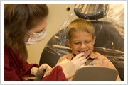

Welcome to Our Practice!
Our office is dedicated to helping you achieve a healthy and beautiful smile with comfort and compassion. We are proud to provide you with quality dental care. It is our pleasure to work with you and provide that personal touch.
Establishing long lasting relationships with our patients based on professionalism and trust is important to us.
Address -
Conviently located in Allegany County at
953 National Highway in LaVale, MD, just West of Cumberland, MD. Click here for directions.
Phone -
New patients are welcome. Call us today at 301-729-1162 for an appointment.

Need an Appointment?
Appointments can be made by calling our office at 301-729-1162. Our office hours are Monday through Thursday from 8:00 am to 5:00 pm.
* Closed daily for lunch from 1:00 pm to 2:00 pm.
First Appointment?
During your first appointment you will receive a complete and thorough examination of your teeth, mouth tissues, bone, jaw joints, and muscles. Digital X-Rays of your teeth and jaw will be taken if necessary.
The examination is usually followed by a consultation appointment. Although there is never a fee for this appointment - it is very important. We would like you to understand the treatment options that are available for you. We are always happy to answer any questions regarding your dental care.
Emergency Care
We realize that an emergency may occur and we will make every effort to respond to your needs as quickly as possbile.
Need an Appointment?
Using current, state of the art dental technology we provide a wide range of services to help improve the health of your teeth.
- Preventive Periodontal Care (Gum Disease)
- Cosmetic Dentistry
- Veneers
- Lumineer Certified
- Cosmetic Whitening
- Crowns and Bridges
- Implant Crowns
- Root Canal Therapy
- Digital Radiography
- Dentures and Partial Dentures
Financial Arrangements
We work with most insurance plans.
We accept most major credit cards.
We are now also offering one year with no interest financing, if approved, through Care Credit. Please ask for more details.